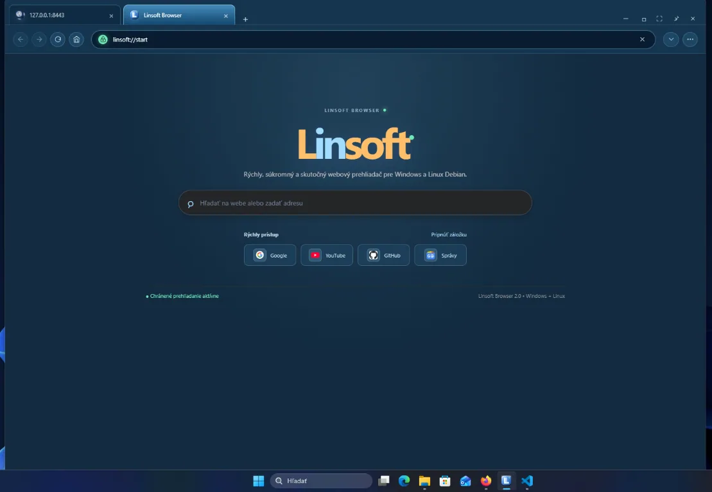

Pred Linsoft OS 1.5, ktorý stojí na Debiane, existovala samostatná vetva systému, ktorú Martin Pastorek budoval od základov: vlastný live systém a inštalátor, desktop napísaný v jazyku C a upravené jadro Linux pod názvom Linsoft Kernel. Tento článok zhŕňa, čo ten pôvodný Linsoft OS bol a čo priniesol.
Osobnosť za projektom
Martin Pastorek
Zakladateľ Linsoft OS a Linsoft Global
Martin Pastorek pochádza zo Slovenska a je zakladateľom Linsoft OS aj Linsoft Global. Za projektom stojí jeho záujem o otvorené technológie a snaha vytvoriť systém s vlastnou identitou, slovenským prostredím a nástrojmi pre každodennú prácu.
Práca na Linsoft OS spája praktické znalosti Linuxu a open-source ekosystému: od zostavovania systému a konfigurácie jadra cez programovanie desktopu v jazyku C až po integráciu aplikácií, inštalátora a aktualizácií. Práve prepojenie týchto oblastí dáva Linsoftu jeho osobitý charakter.
Programátorské znalosti a vlastná cesta vývoja
Tvorba operačného systému je podstatne náročnejšia než bežné používanie počítača či inštalácia aplikácií. Vyžaduje programátorské znalosti, porozumenie fungovaniu jadra, ovládačov a štartu systému, ale aj schopnosť hľadať chyby a prepájať jednotlivé súčasti do funkčného celku. Práca Martina Pastoreka na Linsofte zahŕňa programovanie v jazyku C, tvorbu systémových skriptov, zostavovanie softvéru a integráciu vlastného pracovného prostredia.
Nejde o úlohy, ktoré človek zvládne len bežnou obsluhou počítača. Stojí za nimi učenie, skúšanie, riešenie technických problémov a vytrvalosť. Vlastný desktop, inštalátor, diagnostické nástroje a mechanizmus podpísaných aktualizácií jadra ukazujú rozsah práce potrebnej na vývoj Linsoft OS.
Zdokonaľovanie Linsoft Kernel
Podľa zakladateľa ďalší vývoj pokračuje zdokonaľovaním Linsoft Kernel a vlastnej samostatnej vetvy Linsoft OS. Linsoft Kernel pritom vychádza z jadra Linux: vlastná konfigurácia, zostavenie a integrácia pre Linsoft neznamenajú jadro napísané úplne od nuly.
Vývojový smer, nie obsah aktuálneho ISO: Zdokonaľovanie vlastnej vetvy na Linsoft Kernel treba odlišovať od vydanej verzie 1.5. Tá používa Debian 13 a podpísané jadro Debianu; tento článok neoznamuje nové ISO s Linsoft Kernel.
Vlastný originálny operačný systém Linsoft
Martin Pastorek už vytvoril vlastný operačný systém Linsoft OS – nejde iba o plán do budúcnosti. Jeho pôvodná samostatná vetva bola vydaná vo verziách 1.0–1.4 a spájala Linsoft Kernel, vlastné pracovné prostredie Linsoft Native, štart systému, inštalátor a nástroje na správu počítača do jedného celku.
Originalita Linsoftu spočíva vo vlastnom návrhu prostredia, programovaní nástrojov a spôsobe zostavenia a prepojenia systému. Nie je to len názov alebo tapeta: súčasťou projektu sú vlastné zdrojové kódy desktopu, zostavovacie skripty, diagnostika a mechanizmus aktualizácie jadra. Systém má vlastnú identitu a slovenské zameranie.
Vlastný operačný systém však neznamená, že každá jeho súčasť vznikla od nuly. Linsoft využíva jadro Linux a ďalší open-source softvér; na tejto otvorenej základni stavia vlastné riešenia. Pôvodný systém na Linsoft Kernel a novšia edícia 1.5 na Debiane sú dve odlišné vetvy projektu Linsoft OS.
Pozrieť vydaný pôvodný Linsoft OS 1.4
Čím Linsoft obohacuje open source
Prínos zakladateľa sa prejavuje v konkrétnych súčastiach projektu: pracovnom prostredí Linsoft Native, zostavovaní Linsoft Kernel pre pôvodnú vetvu systému, nástrojoch na správu a diagnostiku aj v jednotnom vzhľade Linsoft OS. Zverejnené zdrojové kódy a zostavovacie skripty umožňujú ďalším záujemcom skúmať riešenia, učiť sa z nich a rozvíjať ich v súlade s príslušnými licenciami.
Linsoft tak rozširuje rozmanitosť otvoreného softvéru o vlastný pohľad na pracovnú plochu a sprístupňuje linuxové technológie aj slovenským používateľom. Jeho hodnota nespočíva v nahradení práce ostatných, ale v jej tvorivom prepájaní a dopĺňaní o vlastné nástroje a skúsenosti.
Projekt nadväzuje na prácu komunít Linuxu, Debianu, XFCE a ďalších otvorených projektov. Vlastný prínos Linsoftu a uznanie pôvodných autorov patria k sebe: open source rastie spoluprácou, zdieľaním poznatkov a rešpektovaním licencií.
Preskúmať zdrojové kódy Linsoft OS
Čo bol pôvodný Linsoft OS
Vetva 1.0–1.4 nebola odvodená od hotovej distribúcie. Systém sa skladal z vlastných skriptov v štýle Linux From Scratch (zostavenie grafického základu, Mesa, terminálu a nástrojov), vlastného štartovacieho prostredia (initramfs), bootloadera GRUB s témou Linsoft a vlastného inštalátora. Súčasťou bolo aj vlastné bootovacie logo a štartovacia obrazovka.
- Linsoft Native – desktop napísaný v C so správcom súborov, nastaveniami, správcom balíkov, zmiešavačom zvuku a nástrojmi pre sieť a hardvér.
- Live systém a inštalátor pre BIOS aj UEFI, štart z USB (hybridné ISO) aj z DVD.
- Vlastné aktualizácie – kontrola nového vydania a aktualizácia jadra priamo v nainštalovanom systéme.
- XFCE 4.20 od verzie 1.4 ako predvolená plocha; Linsoft Native zostal ako voliteľné prostredie.
Linsoft Kernel
Linsoft Kernel je Linux zostavený a udržiavaný pre Linsoft OS. Verzia 1.0 používala jadro 6.16.1, od verzie 1.2 prešla vetva na dlhodobo podporované jadro 6.18 LTS (vo vydaní 1.3 6.18.58).
Podpora hardvéru
- Wi-Fi: Intel (iwlwifi), Realtek (rtw88, rtw89, rtl8xxxu), MediaTek (mt7921, mt7925), Qualcomm Atheros (ath9k–ath12k), Broadcom (brcmfmac).
- Grafika: AMD (amdgpu, radeon), NVIDIA (nouveau), Intel (i915, xe).
- Notebooky: I2C touchpady a dotykové displeje, zvuk Intel/AMD (SOF, ACP), NVMe za Intel VMD/RST, USB Ethernet, klávesové skratky.
- Firmvér pre Wi-Fi, grafiku, zvuk a Bluetooth z Debianu (non-free-firmware).
Aktualizácia jadra priamo v systéme
Od verzie 1.3 vedelo okno Aktualizácie stiahnuť novšie jadro Linsoft Kernel z vydaní na GitHube a nainštalovať ho bez nového ISO. Balík jadra bol podpísaný kľúčom Linsoft; podvrhnutý alebo poškodený balík sa odmietol ešte pred akoukoľvek zmenou. Predchádzajúce jadro zostalo ako záloha a v ponuke GRUB bola položka na jeho spustenie. Live režim jadro nikdy nemenil.
Secure Boot
Vo verzii 1.1 pribudla podpora Secure Boot: shim podpísaný Microsoftom a GRUB aj jadro podpísané kľúčom Linsoft. Kľúč bolo potrebné raz zaregistrovať v MokManageri.
Vývoj verzií
| Verzia | Čo priniesla |
|---|---|
| 1.0 | Prvé vydanie: live systém, inštalátor BIOS/UEFI, desktop Linsoft Native a Linsoft Kernel 6.16.1. |
| 1.1 | Secure Boot (shim, podpísaný GRUB a jadro), spoľahlivejší štart z USB. |
| 1.2 | Linsoft Kernel 6.18 LTS, ovládače pre Wi-Fi, grafiku a notebooky, firmvér, Wi-Fi s heslom, diagnostika hardvéru, heslo používateľa, dual boot s Windows, kontrola aktualizácií. |
| 1.3 | Podpísané aktualizácie jadra priamo v systéme so zálohou predchádzajúceho jadra. |
| 1.4 | XFCE 4.20 ako predvolená plocha, nové okno Vypnúť alebo odhlásiť, Linsoft Native ostáva na výber. |
Čo je teraz
Verzia 1.5 je iná vetva: používa Debian 13, jeho podpísané jadro, Openbox a Tint2, vďaka čomu funguje so zapnutým Secure Boot bez registrácie kľúča. Vlastné jadro Linsoft Kernel sa v nej nepoužíva: nepodpísané vlastné jadro vo vývojovej zostave 1.5 neprešlo Secure Boot (HP hlásilo „Secure Boot Violation“), preto sme prešli na podpísané jadro Debianu. Vetva 1.0–1.4 zostáva dostupná na GitHube, no nie je s verziou 1.5 priamo kompatibilná a aktualizácia z nej nie je podporovaná.
Vydanie 1.4 (pôvodná vetva) Všetky vydania Stiahnuť 1.5
Svet Linsoft: prehliadač, vyhľadávanie, komunikácia a kancelária
Linsoft nie je iba operačný systém. Jeho projekty rozširujú značku do každodenných oblastí: prehliadania webu, hľadania informácií, rozhovorov a práce s dokumentmi. Každý má vlastné rozhranie a vlastnú úlohu — spolu predstavujú širší záber tvorby Linsoft.


Váš web. Pod vašou kontrolou.
Linsoft Browser
Samostatný počítačový prehliadač pre Windows a distribúcie Linuxu založené na Debiane, napríklad Ubuntu. Projekt zverejňuje vlastný zdrojový kód pod licenciou MIT. Jeho domovská stránka spája vyhľadávanie s rýchlym prístupom k obľúbeným webom a dopĺňa rozhranie s kartami a adresným riadkom.
Oficiálna stránka predstavuje záložky, históriu, správu sťahovania, centrum webových aplikácií a otváranie miestnych PDF súborov. Medzi pokročilejšie možnosti uvádza podporu OpenVPN a samostatné voliteľné Tor nástroje. Ako vyhľadávač možno podľa dokumentácie vybrať Google, Bing, DuckDuckGo alebo Linsoft Search.
Pohľad na projekt: Linsoft Browser dáva ekosystému vlastné vstupné miesto na web. Zaujímavé je prepojenie bežného prehliadania s prístupom k službám Linsoft a otvorenosťou kódu, ktorú môžu technicky zvedaví používatelia využiť na štúdium či úpravy podľa licencie. Je to samostatná aplikácia, nie iba webová stránka vyhľadávača.
Súkromie bez prehnaných sľubov: Podľa stránky sa história a záložky ukladajú do lokálneho profilu a automaticky sa nesynchronizujú cez cloudové konto. Vyhľadávacie dopyty však dostáva vybraný poskytovateľ a blokovanie sledovania nie je úplné. Bežné prehliadanie nejde automaticky cez Tor a projekt negarantuje anonymitu.
Spoznať Linsoft Browser Zdrojový kód
Originálna snímka prevzatá z oficiálnej stránky projektu 29. 10. 2026. Linsoft Browser 2.0.32 je predinštalovaný v aktualizovanom ISO Linsoft OS 1.5 namiesto Firefoxu. V live systéme so Secure Boot bolo overené spustenie aj otváranie externých HTTPS odkazov pri prvom a opakovanom spustení; pokročilé funkcie OpenVPN a Tor neboli testované.

Objavovanie informácií
Linsoft Search
Vstupná brána k informáciám s čistým rozhraním, výrazným vyhľadávacím poľom a voľbou kategórií Všetko, Web, Obrázky, Videá a Správy. Stránka ponúka prepínanie témy aj voľbu zapamätania vyhľadávaní s prehľadom nedávnych hľadaní.
Pohľad na projekt: Jeho silnou stránkou je sústredenie na jednu činnosť: zadať otázku a vybrať typ obsahu. Jednotná vizuálna identita robí z vyhľadávania prirodzenú súčasť sveta Linsoft. Samotné rozhranie však nepotvrdzuje vlastný index webu ani konkrétnu technológiu získavania výsledkov.

Priestor na rozhovory
Linsoft Chat
Komunikačný projekt s webovým rozhraním a odkazmi na aplikácie pre Android a Windows. Rozhranie ponúka prihlásenie cez QR kód z mobilnej aplikácie, pridávanie kontaktov prostredníctvom kontaktných kódov a zoznam rozhovorov.
V prostredí sú pripravené ovládacie prvky pre správy, prílohy, hlasové správy, videohovory a zdieľanie obrazovky. Dopĺňa ich panel internetového rádia so slovenskými stanicami. Stránka uvádza koncové šifrovanie nových správ a súborov (E2E); nejde tu o nezávislé overenie jeho implementácie.
Pohľad na projekt: Linsoft Chat rozvíja myšlienku jedného komunikačného priestoru na viacerých zariadeniach. Spojenie rozhovorov, mobilnej aplikácie a desktopového klienta dáva značke presah za hranice samotného operačného systému. Hovory a odosielanie správ neboli pri príprave článku testované po prihlásení.

Digitálna kancelária
Linsoft Office
Projekt predstavuje spoločný pracovný priestor pre textové dokumenty, tabuľky a prezentácie. Úvodná stránka uvádza vlastný používateľský účet, vlastné súbory a synchronizáciu medzi počítačmi; ponúka prihlásenie aj registráciu.
Samostatne predstavuje aplikáciu Linsoft Office pre 64-bitový Windows 10/11: podľa stránky umožňuje lokálnu prácu bez internetu a bez účtu, pričom prihlásenie je určené na synchronizáciu dát. Názvy Word, Excel a Prezentácie sú označenia nástrojov na stránke, nie potvrdenie, že ide o aplikácie Microsoftu alebo o úplnú kompatibilitu s ich formátmi.
Pohľad na projekt: Najzaujímavejšia je myšlienka spojiť lokálnu kanceláriu s voliteľnou synchronizáciou. Používateľ by tak nemusel zamieňať prácu na vlastnom počítači za povinnosť byť stále online. Editory, synchronizácia a inštalátor pre Windows neboli pri príprave článku prakticky testované.
Snímky Search, Chat a Office zachytávajú verejné úvodné rozhrania z 28. 10. 2026; kliknutím sa otvoria v plnej veľkosti. Popisy vychádzajú zo zobrazených stránok. Ide o samostatné projekty: ich uvedenie neznamená, že sú nainštalované v ISO Linsoft OS 1.5.
Budúcnosť Linsoft OS: od vlastného jadra k otvorenej platforme
Operačný systém nie je iba to, čo vidíme na obrazovke. Je to súhra tisícov rozhodnutí: ako počítač štartuje, ako prideľuje výkon aplikáciám, čo dovolí programom a ako ochráni dáta pri zlyhaní. Práve v tomto priestore sa otvára ďalšia kapitola Linsoftu — prepojiť technickú hĺbku s prostredím, ktorému používateľ rozumie.
Technologická vízia: Zakladateľ uvádza pokračovanie vývoja vlastného systému a zdokonaľovanie Linsoft Kernel. Nasledujúce témy rozvíjajú tento zámer ako návrhy budúceho smerovania. Nejde o potvrdený harmonogram ani zoznam funkcií dostupných v ISO 1.5.
1. Linsoft Kernel: výkon, ktorý treba dokázať
Ďalší rozvoj vlastnej vetvy môže stáť na dlhodobo podporovanom jadre Linux, premyslenej konfigurácii a pravidelnom preberaní bezpečnostných opráv. Dôležitá nie je iba verzia jadra, ale aj fungovanie ovládačov, plánovanie úloh, správa pamäte a spotreba energie. Cieľom by mala byť vyvážená odozva desktopu aj pri vyššej záťaži, nie výkon získaný vypnutím bezpečnostných mechanizmov.
Každé tvrdenie o zrýchlení potrebuje meranie: čas štartu, odozvu aplikácií, využitie RAM či výdrž notebooku za rovnakých podmienok. Súčasťou takejto cesty je aj testovanie Wi-Fi, grafiky, zvuku, uspávania a prebúdzania na konkrétnych zariadeniach. Vlastné meno jadra samo osebe výkon nezaručuje; rozhoduje kvalita zostavenia a overenia.
2. Aktualizácie, pri ktorých zostáva cesta späť
Pôvodný Linsoft už pracoval s podpísanými balíkmi jadra a zachovaním predchádzajúceho jadra. Ambicióznym pokračovaním by bolo overovanie pôvodu všetkých aktualizácií, kontrola kompatibility a obnova po neúspešnej zmene. Podpis potvrdzuje pôvod a neporušenosť balíka, nie jeho bezchybnosť — preto sú testy aj návrat k funkčnej verzii rovnako dôležité.
Jednou z možností na preskúmanie sú systémové snímky alebo oddelené systémové oddiely A/B: nová verzia sa pripraví vedľa existujúcej a po overení sa aktivuje. Takéto riešenie však vyžaduje návrh rozdelenia disku, spoluprácu bootloadera a ochranu používateľských dát; nejde o funkciu, ktorú možno pridať iba novým tlačidlom.
3. Linsoft Native: vlastný desktop s moderným základom
Vlastné rozhranie môže ďalej rozvíjať jednotnú ponuku aplikácií, nastavenia, upozornenia a prácu so súbormi. Technologickou témou do budúcnosti je Wayland — protokol pre komunikáciu aplikácií s kompozitorom, ktorý riadi zobrazovanie a vstup. Prechod by vyžadoval vhodný kompozitor a prispôsobenie nástrojov; samotný Openbox je správca okien pre X11, nie Wayland kompozitor.
Zmysel takéhoto vývoja by bol v lepšej podpore viacerých monitorov, rôznych mierok zobrazenia a riadeného prístupu aplikácií k obrazovke. Rovnako podstatné sú dostupné klávesové skratky, čitateľnosť, ovládanie bez myši a slovenská lokalizácia. Modernosť rozhrania sa meria aj tým, koľkým ľuďom umožní pohodlne pracovať.
4. Linsoft Store: aplikácie s jasným pôvodom a oprávneniami
Budúci obchod s aplikáciami môže klásť dôraz na zrozumiteľné informácie: odkiaľ aplikácia pochádza, kto ju udržiava a k čomu má prístup. Popri systémových balíkoch možno preskúmať aj Flatpak, ktorý umožňuje distribúciu aplikácií s izoláciou a používanie portálov na vybrané úkony, napríklad otvorenie súboru. Miera izolácie však závisí od udelených oprávnení; nie je automatickou zárukou bezpečnosti.
Pre používateľa by mala byť inštalácia jednoduchá, ale nie nepriehľadná. Systém má vysvetliť potrebu administrátorského oprávnenia, ukázať skutočný priebeh operácie a pri chybe ponúknuť zrozumiteľnú správu namiesto predstierania úspechu.
5. Súkromie a kontrola nad vlastným počítačom
Silnou zásadou budúceho Linsoftu môže byť lokálne fungovanie bez povinného cloudového účtu. Prípadná diagnostika odosielaná vývojárovi by mala byť dobrovoľná, s náhľadom obsahu a bez hesiel či osobných súborov. Šifrovanie disku a zálohovanie sú ďalšie témy na rozvoj, no vyžadujú spoľahlivú správu kľúčov a otestovanú obnovu dát.
6. Otvorený vývoj, ktorému sa dá dôverovať
Zverejnenie kódu je začiatok, nie koniec. Ďalším krokom môžu byť zdokumentované zostavenia, automatické testy, prehľad známych problémov a verejné výsledky overovania hardvéru. Reprodukovateľné zostavenie znamená, že z rovnakých zdrojov a definovaného prostredia možno získať bitovo rovnaký výsledok; vyžaduje kontrolu nástrojov, závislostí aj časových údajov. Je to konkrétny technický cieľ, nie nálepka.
Veľká vízia Linsoftu nemusí byť o najhlasnejšom sľube. Môže byť o systéme zo Slovenska, ktorý má vlastnú identitu, rozvíja vlastné nástroje a svoje schopnosti dokazuje otvoreným kódom a opakovateľnými testami. Od Linsoft Kernel až po posledné tlačidlo na ploche má každá vrstva slúžiť jedinému výsledku: aby používateľ svojmu počítaču rozumel a mohol sa naň spoľahnúť.
Autor: Martin Pastorek. Linux, Debian, XFCE a ďalší open-source softvér patria ich pôvodným autorom.